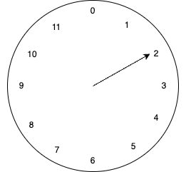
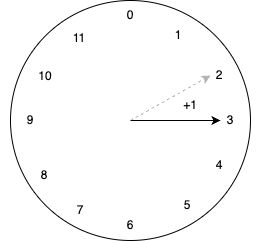
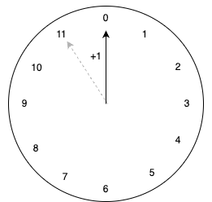
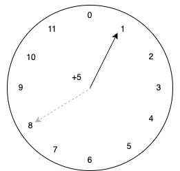
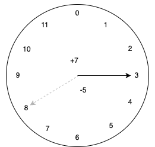

Learn you Galois Fields for Great Good (02)
Navigation | first | next | previous
Group Theory
This is part 2 of a series on Finite Fields. In this part, we'll give a gentle introduction to Group Theory.
Clock Arithmetic
A Group is one of the basic algebra structures. It's simply a set of "numbers" and an "operation" on them. The operation is normally refered to as "addition" or "multiplication" but the operation may behave somewhat different. In fact, you are already very familair with a Group: A Clock.
Of course, as computer scientists, we must start our numbers at 0 because we're all neurodivergent and we take great pleasure in annoying mathematicians.

Our clock uses the numbers {0, 1, 2, 3, 4, 5, 6, 7, 8, 9, 10, 11} and has the operation of "an hour passes".
If the hour-hand points to 2 and the "operation" occurs, it now points at 3.

Similairly, if it points at 11, then after the "operation" it will point to 0 (rolls over to the beginning).

Or we can "add" 5 hours to 8 and we will get 1.

Or we can "add" 0 hours and the hour will stay the same!
We can even "subtract", which is going backwards around the clock. Subtracting 5 hours from 8 gives 3. Just like arithmetic over integers, subtraction is just addition in disguise. We just add the "negative" or we multiply by the "inverse". If we want to subtract 5, we could instead add 7:
8 - 5 = 8 + (-5) = 8 + 7 = 3

Summarizing, we can do all of the following on this clock:
- We can
add n hoursto any position, yielding a new position on the clock - We can find an
additive-inverseof any position that can convert any subtraction into an addition - We can add
zeroand the position doesn't change - We can do
associativeaddition, i.e. (1 + 2) + 3 = 1 + (2 + 3)
Exercise: Work through some examples and convince yourself of these facts. Internalizing these ideas is critical to keeping your sanity as things get more abstract.
Here are some examples of operations on our clock. Work through each to make sure you understand completely. Try your own examples. I'm serious. We are going to generalize / abstract this significantly and it helps to have a very solid understanding of a concrete example.
| a | b | -b | a + b | a - b |
|---|---|---|---|---|
| 5 | 0 | 0 | 5 | 5 |
| 1 | 1 | 11 | 2 | 0 |
| 4 | 3 | 9 | 7 | 1 |
| 11 | 2 | 10 | 1 | 9 |
| 6 | 6 | 6 | 0 | 0 |
Group definition
The clock example we gave above is an example of a Group. It's helpful to keep the example in mind as we start introducing abstract definitions.
A Group is defined as some operation (+) defined over a set of "numbers" which follow these rules:
- Associativity:
(a + b) + c = a + (b + c) - Identity: one of the numbers
eacts like a"zero":a + e = a, e + a = a - Inverse: each element
ahas some unique elementbwherea + b = e
And that's it.
Exercise: Convince yourself that our clock is a group according to these definitions.
Modular Arithmetic
Our clock arithmetic group is an example of a Modular Arithmetic. In particular, it's the special case where modulus n = 12.
There's no special reason we need to use 12. We can use any modulus n we like. Over the operation of addition, this always
forms a group!
In modular arithmetic, the following notation is commonly used:
a == b (mod n)
This says that a and b are logically the same value. Consider our clock again, if the hour hand points at 5
and we add 12 hours, we'd be at 17 right? But we don't have a 17 hour hand. Instead we roll over to 5 again.
In modular arithmetic notation, we'd express this as:
17 == 5 (mod 12)
Similairly there are an infinite number of integers that are "equivalent" to 5 when modulus n=12:
5 == 5 (mod 12)
17 == 5 (mod 12)
29 == 5 (mod 12)
41 == 5 (mod 12)
53 == 5 (mod 12)
(... etc ...)
In general:
5 + k*12 == 5 (mod 12) [for any integer k]
In this way, we can think of modular arithmetic as doing normal arithmetic and then only keeping the remainder after applying the modulus.
Exercise: Play around with the modular arthmetic where n=5: (a) what are the numbers? (b) what is the identity number? (c) what is the "additive inverse" of 3? (d) which integers are "equivalent" to 1?
Do the exercise. Each section gets harder. You need to fully understand each or you'll get lost later.
Modular Arithmetic: Multiplication
How about the same modular arthmetic, but with multiplication instead of addition? Let's see..
We want to do:
a * b = c (mod n)
Examples with our n=12 clock:
5 * 4 = 20 == 8 (mod 12)
3 * 2 = 6 == 6 (mod 12)
Exercise: Does this form a Group? Justify each required property or give a counter-example.
Don't read on before completing the exercise.
...
...
...
First, it's clear that 1 must be the identity element because:
a * 1 = 1 * a = a (mod 12)
We need a multiplicative inverse for each element, including 0:
0 * a = 1
But, there's no solution! So the set {0, 1, 2, 3, 4, 5, 6, 7, 8, 9, 10, 11} is not a group using multiplication.
What if we just get rid of 0 then and use the subset {1, 2, 3, 4, 5, 6, 7, 8, 9, 10, 11} ?
Is this a group now? Unfortunately no. Not every element has an "inverse".
Consider the element 2. We need to find some x such that: 2 * x = 1.
Exercise: Try each of the numbers {1, 2, 3, 4, 5, 6, 7, 8, 9, 10, 11} for x. Is there an inverse? Can
you think of simple reason why not?
So maybe modular arithmetic doesn't work? Give Up? Actually no.
Modular arithmetic over multiplication works if the modulus n is prime. This is a direct result of important facts in number theory involving the greatest-common denomenator and bezout's identity.
Proof (you can skip this):
Let a be some number from the set. And suppose we wish to find an inverse b such that:
b * a == 1 (mod n)
We'll rearrange this expression:
b * a = 1 + k*n [for some constant k: 1 + k*n == 1 (mod n) for all k]
b * a + (-k) * n = 1 [move n to left-side]
We've acheived a form where we can use an important identity.
Bezout's Identity states that given x and y, we can always solve for a and b in the equation:
a*x + b*y = gcd(x, y)
So we can solve:
b * a + (-k) * n = gcd(a, n)
And b will be our desired inverse when:
gcd(a, n) = 1
When n is prime, we have gcd(a, n) = 1 always. So we must always have a solution.
The proof is complete.
With this result we can satisfy our 3 group properties and conclude that modular-arithmetic over the sets
{1, 2, ..., p} is always a group when p is prime.
Exercise: Explore n=5 modular-arithmetic over multiplication using the set {1, 2, 3, 4}: (a) draw the multiplication table (it should have 16 squares), (b) draw the inverse table (it should have 4 squares)
Exercise: Explore n=4 modular-arithmetic over multiplication using the set {1, 2, 3}: (a) give a counter-example for why this is not a Group
Next Steps
You should be very comfortable with this material before moving on. If you aren't, go back and do more examples. This is a very cumulative subject and in each section, I will assume you've mastered the previous section.
Next up, we will extend Group Theory into Field Theory.
Let's do it.